Saint-Jean-de-Monts / Pornichet 2004 : Passion Cerf-volant

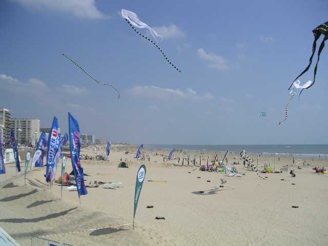
Les deux premiers jours : Saint-Jean-de-Monts. Que du beau temps, d'ailleurs on n'a pas vu un nuage en 4 jours. Les marchands de crème solaire ouvrent bien leur année ! Pour le vent il y en a, on ne peut pas dire, mais il souffle de la terre, donc de derrière les immeubles. A St-Jean, on fera avec. Mais à Pornichet où les immeubles sont deux fois plus haut et forment un front continu, ça deviendra très risqué et les volontaires décroîtront au fil des heures, devant les rafales passant de 0 à Force 5 ou 6 en quelques secondes !

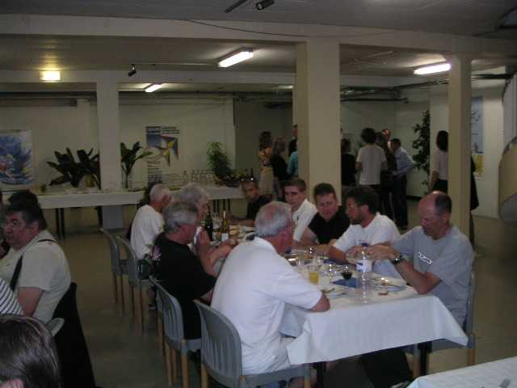
Commençons donc par l'accueil, qui témoigne à la fois d'une organisation puissante et de GO souriants comme Carole et toujours prêts à donner plus.

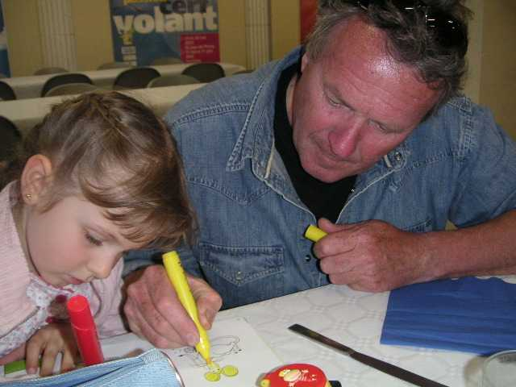
A Saint-Jean, les repas sont fournis le matin et à midi dans le réfectoire au sous-sol du Palais des Congrès.
Le soir, via le petit train, au restaurant du VVF, pour préparer le vol de nuit. Somptueux dîner où on ne vient même pas à bout du magret de canard (on croyait qu'il n'y avait que le buffet initial, nous), Logos aura sa part !

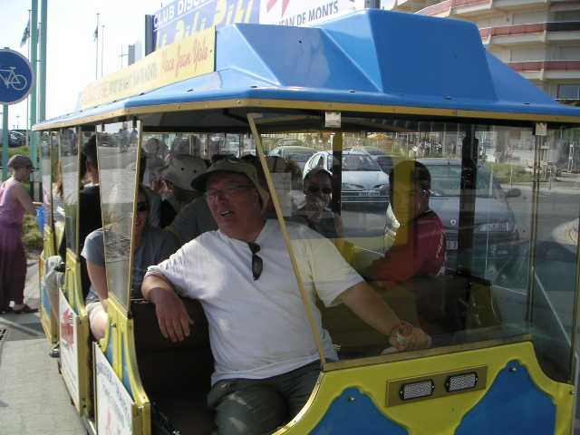

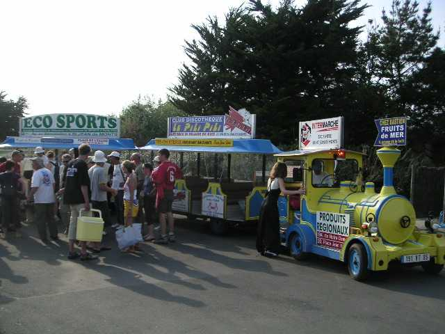

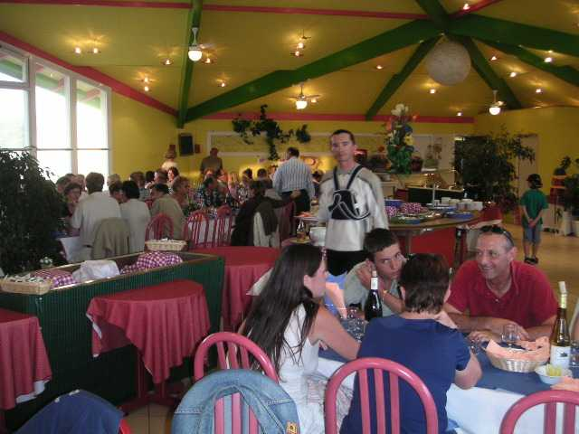

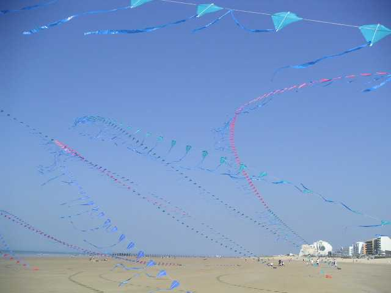
Sur la plage, le lendemain, des arches multiples, "et encore y a pas tout" dit l'auteur.

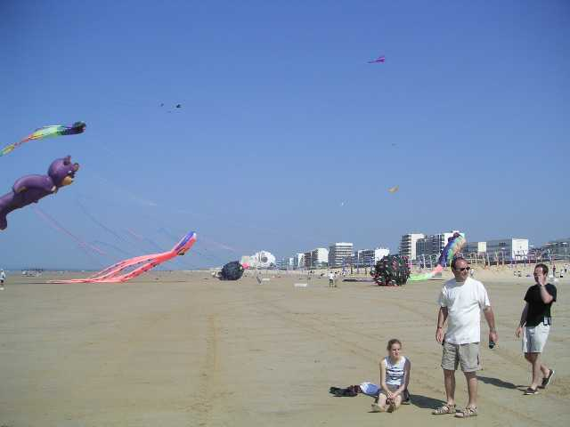
Dominique Bonney est partout, la sucette à la main pour commenter et interviewer.

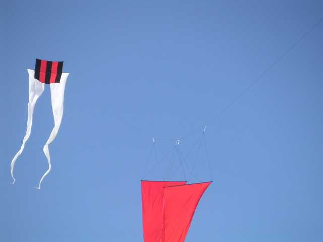
On peut admirer des cerfs-volants originaux, en particulier ici dans la manière de tenir des banderoles horizontalement.

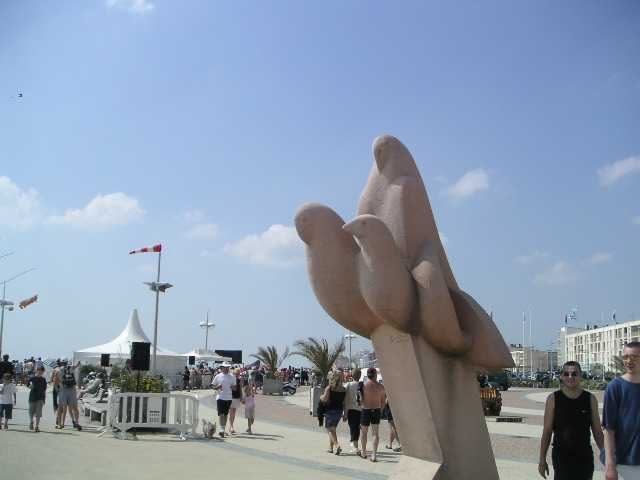
Les vols ont lieu face à la Place des Oiseaux, baptisée ainsi en l'honneur de mes créations (je remercie bien la municipalité).

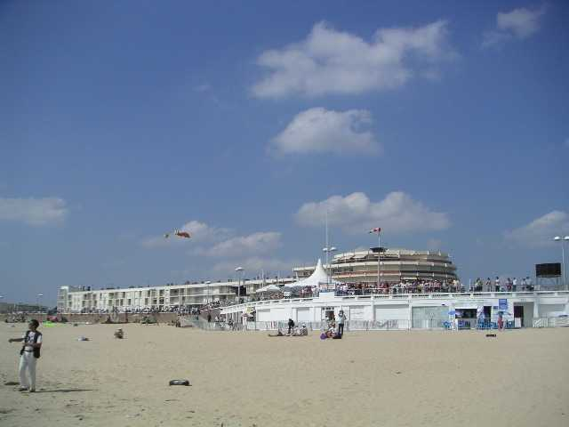
Le public n'est pas absent, ni les cerfs-volants.

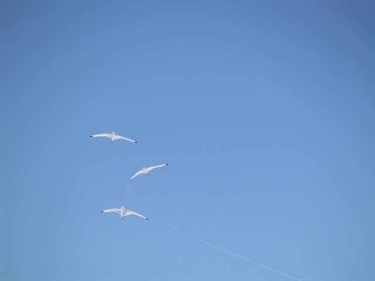
Les Ailes du Désir présentent leurs créations jaunes et noires, ou noires sans jaune.

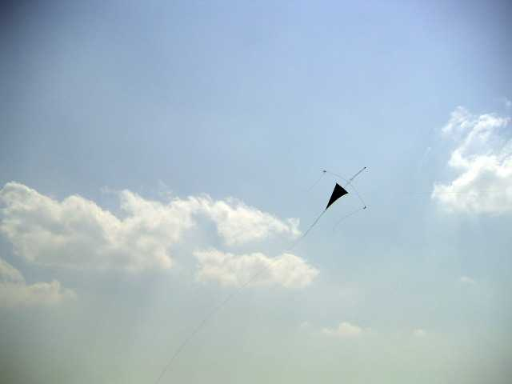
Les noires sont inspirées des compositions de Miro.

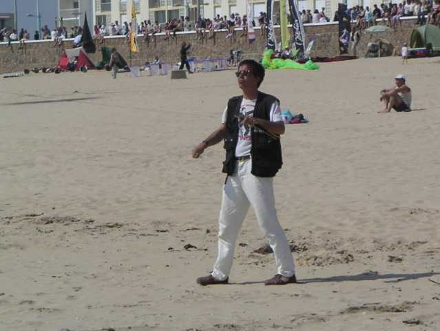

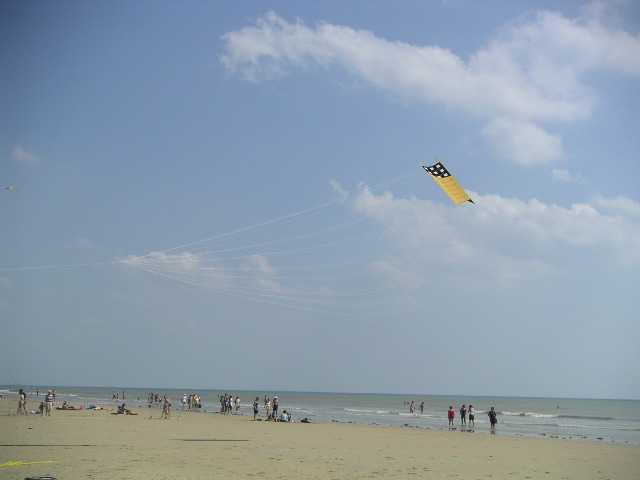
Les Edos bicolores sont des compositions très architecturées, il en existe une gamme de semblables, mais tous légèrement différents.

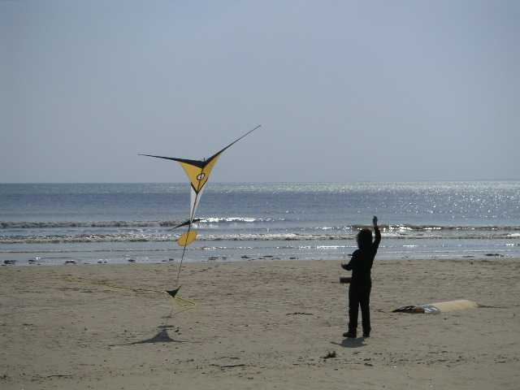

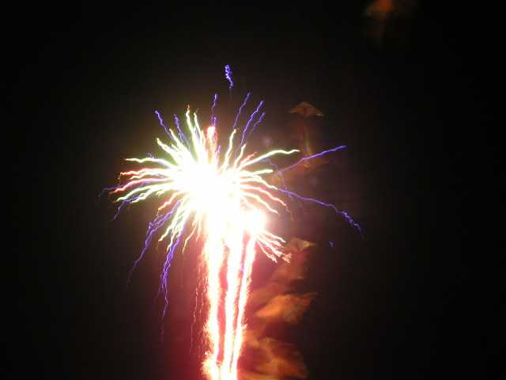
Eh ben, surprise, cela ne fait pas de trous !
Le vol de nuit a été couronné par un feu d'artifice, pas mal, mais j'ai préféré celui de Pornichet, bien construit (et puis je volais en plein milieu, c'était stressant mais géant !).

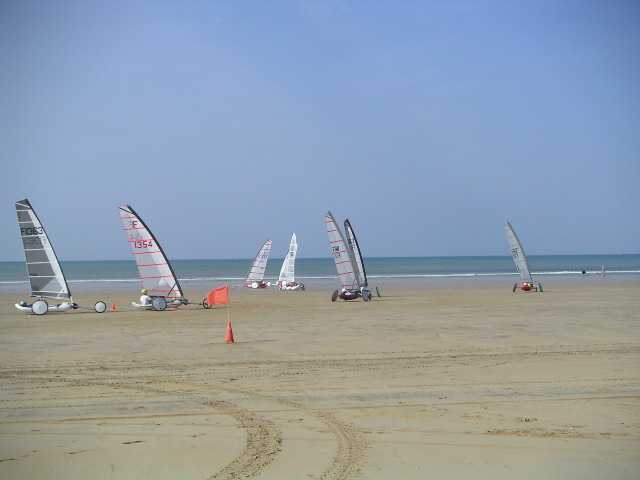
Le Samedi, Pornichet, donc, pour 2 jours aussi. A coté des cerfs-volants : des championnats de France de chars, chars à voile très sophistiqués, souvent sur 2 de leurs roues lenticulaires,

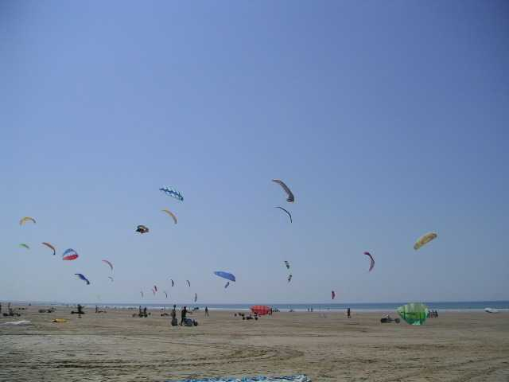
et chars à cerfs-volants, avec des Peter Lynn, des voiles à caissons, et des voiles sans dessous, mais avec des nervures verticales rigidifiées par des joncs, et intermédiaires en performances entre les 2 autres types.

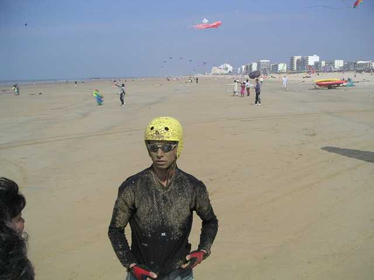
Evidemment, les organisateurs font passer exprès les chars dans le sable mouillé, mais ça freine et ça arrose !

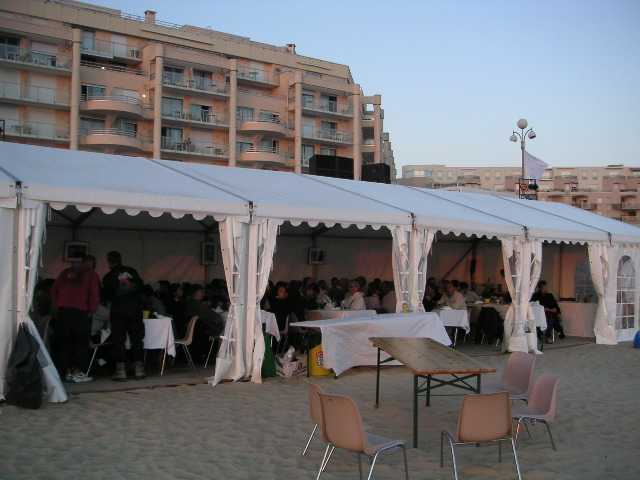
La tente sur la plage accueille les cerfs-volistes pour des repas plus que reconstituants !

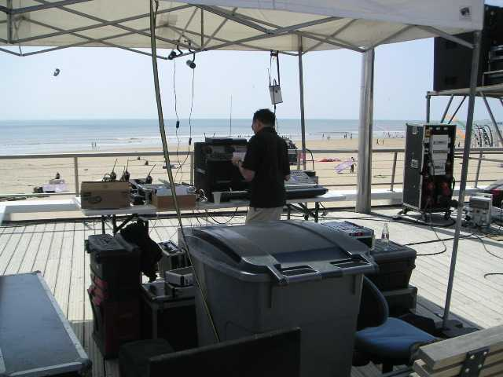
La sono cerfs-volants est musclée aussi, mais c'est presque partout pareil : les sonoMen trouvent leur fierté à cracher du décibel au point d'empêcher les conversations sur la plage (mais si !) mais ne sont pas capables en 4 jours de fournir un micro qui marche ! (enfin, ils marchent bien sauf si on parle dedans plus de deux secondes...).

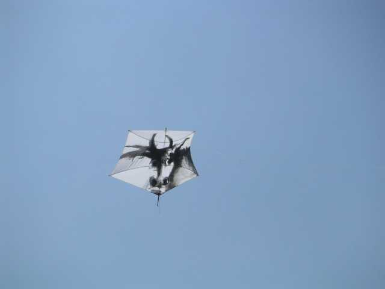
Mais le vent est encore pire qu'à Saint-Jean-de-Monts, et les immeubles plus hauts et plus continus ! Voler devient une galère sans nom, c'est le cas de le dire, Jean-Paul n'arrête pas de lancer le kayak à l'eau, avec une ficelle à l'arrière, le propriétaire du CV coupé pagayant dur pour arriver avant que ledit CV ne disparaisse... Je n'ai pas pris de photos, c'est moi qui ramais... L'Albatros 3 fois à la mer en 4 jours (sans compter les piqués sur le sable) c'est quand même une bonne dose. Mais le vol de nuit au milieu du feu d'artifice, c'était grandiose.

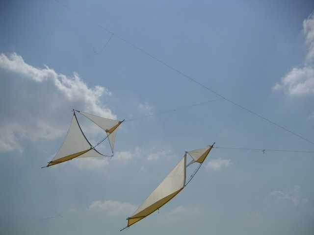
Alain, après avoir fait voler ses Marconis seuls, puis en train, s'est résigné à les accrocher à un porteur pour les stabiliser.

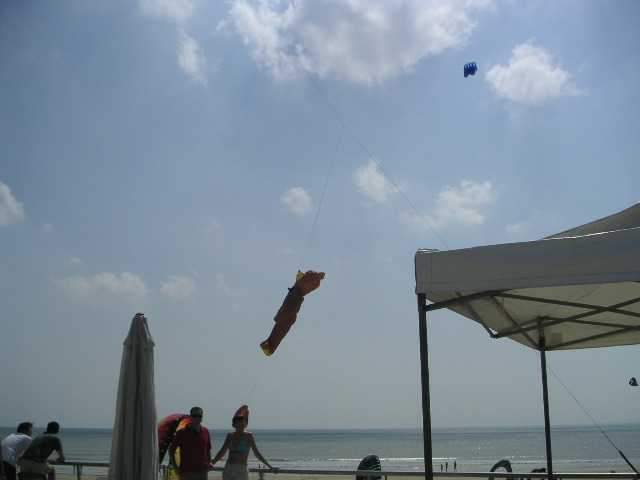
Jean-Michel fait faire la sieste sur le dos à son nounours, abrité du vent par les immeubles.

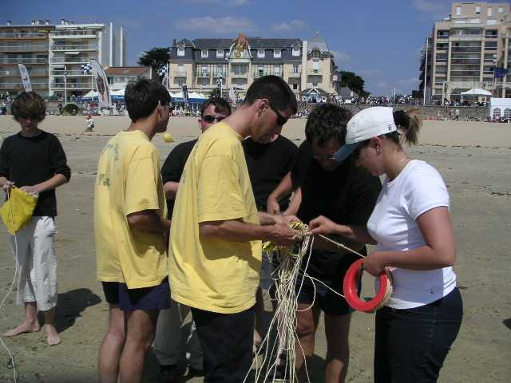
Pour ne pas faillir à la tradition, il y a quand même plusieurs combats de Rokkakus, remportés à Pornichet par Dédé, au terme de luttes acharnées. On a dû enfermer les concurrents dans un périmètre clos pour empêcher les malhonnêtes d'éviter le combat.

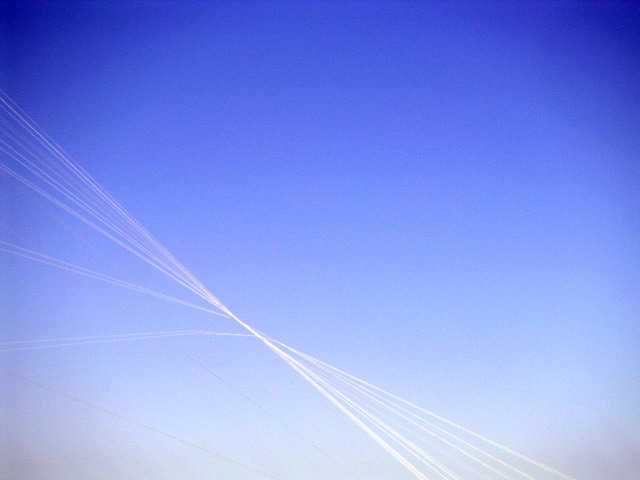
Pour rester dans les noeuds, celui-ci, double pyramide incroyable et très esthétique est créé par l'un des mégateams qui se sont courageusement battus pour présenter un spectacle.

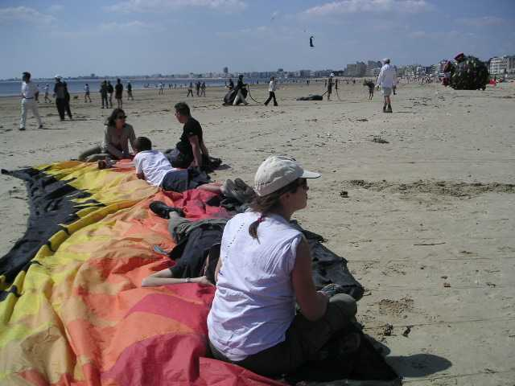
Toujours dans le domaine des noeuds, le bol AWITA a explosé les suspentes. Croyez pas que les cerfs-volistes assis dessus sont là pour bronzer sans se mettre du sable partout :

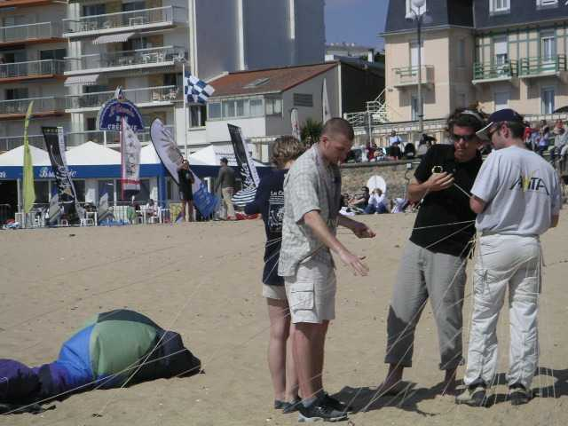
ils tiennent le bol fermé de crainte que le vent ne s'engouffre dedans, et ne tire 200 kg sur les brides défaites et les petits doigts calculés pour à peu près 20 kg chacun (et encore, en tirant bien droit !) des démêleurs.

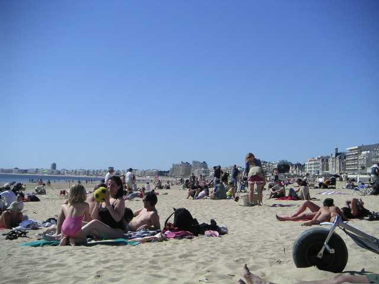
L'après-midi avance, les cerfs-volants se raréfient, le public nous envahit peu à peu pour en profiter, et la plage offre de belles perspectives.

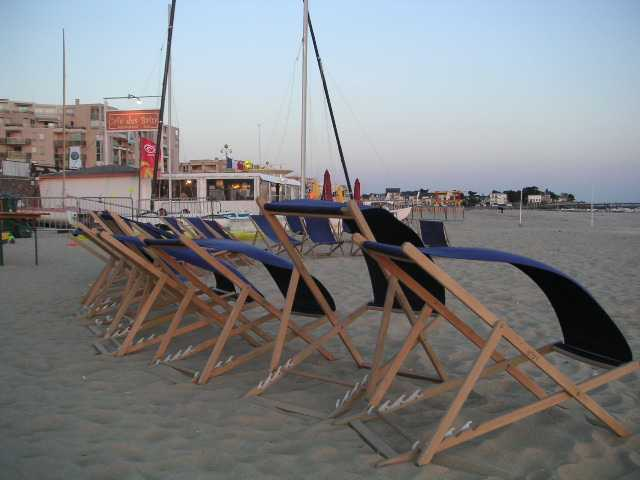
Le soir arrive, sans que le vent ne change, même à l'abri de la promenade.

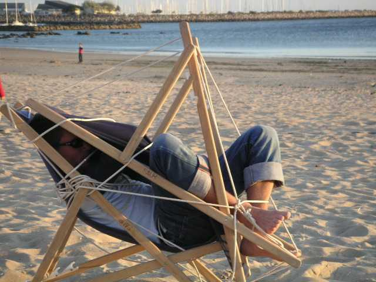
Certains trouvent quand même une utilité aux chaises-longues, contre les acharnés du téléphone portable...
Mais le soleil finit quand même par se coucher sur La Baule...

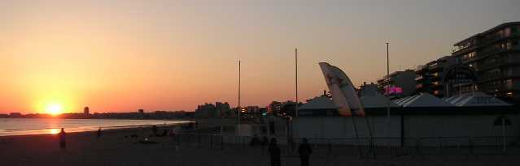